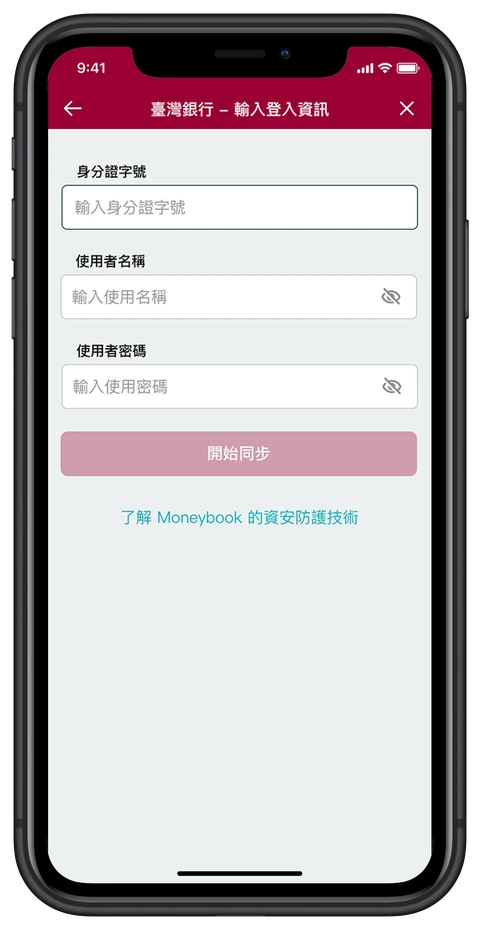
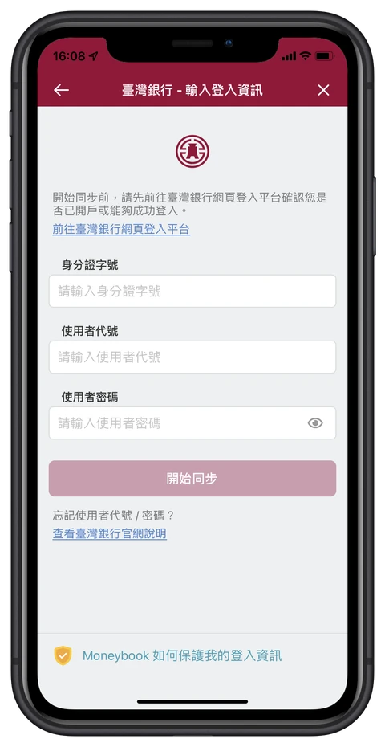
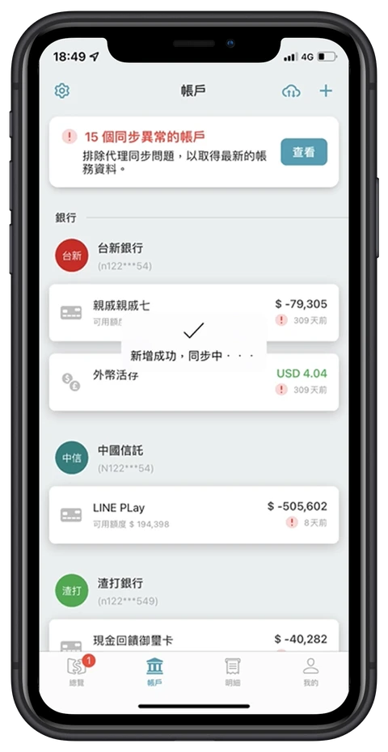

Moneybook 麻布記帳・整合金融帳戶的個人財務管理服務
優化金融帳戶綁定流程，建立使用者進入核心體驗的基礎
提升完成首次金融帳戶綁定的意願與成功率，並降低後續跨帳戶整合的操作阻力，讓使用者順利進入產品核心體驗
新進使用者的金融帳戶綁定率偏低，導致活躍使用者成長緩慢
我交叉比對綁定漏斗數據、App 商店評論與客服進線紀錄，並剖析各國標竿金融帳戶整合服務。標竿產品皆透過多層次的信任鋪陳與引導來化解防禦心理；Moneybook 既有流程卻陷入「過度追求步驟精簡，而忽略金融高敏感場景的心理門檻」的盲點，反映在三大核心阻礙：
突襲式索取引發資安防禦心理
盤點 App 商店評論發現，既有流程過度簡化前置引導：使用者在毫無心理準備與安全背書的狀況下，畫面就直接要求輸入帳號密碼。這種「突襲式索取」放大了竊密恐慌，不少潛在使用者在輸入登入資訊頁因缺乏安全感而離開。
過度追求介面極簡，造成高挫敗感
客服進線紀錄顯示，許多已克服資安疑慮的高動機使用者，卻因不清楚該輸入網路銀行或行動銀行的帳密、或忘記帳密而反覆失敗。既有設計省略了必要的欄位規範與格式說明，也缺乏即時引導與錯誤恢復路徑，失敗後的使用者容易無所適從而放棄。
同步狀態缺乏透明度，引發失控焦慮
綁定後的資料同步需要較長等待時間，但既有流程只有單調的等待提示，缺乏進度拆解與狀態引導。剛交出敏感資訊的使用者處於高壓心理，過於簡略的狀態回饋反而讓人誤以為程式異常或資料遭不當處理，在最終環節因恐慌或不耐而離開。
依流程中的流失原因，排定對策及開發優先序
我提出「良性摩擦力」假說：在金融高敏感場景，適度的前置信任說明與流程回饋，比單純精簡步驟更能提升使用者完成綁定的意願與能力。據此，針對旅程中的阻礙規劃以下對策：
優化金融帳戶綁定流程，提升使用者的清晰度與操作掌控感
降低使用者在「輸入銀行登入資訊」步驟的操作阻力


- 加入金融機構的 Logo以提升信任感。
- 提供銀行登入頁面的連結讓使用者在綁定金融帳戶之前，可以先確認自己的登入資訊是否正確。
- 提供銀行忘記代號或密碼的連結協助使用者找回登入資訊，並在無法成功登入時降低焦慮感。
同步過程更透明，失敗時有明確的下一步

- 導入即時同步進度的提示提升使用者的掌控感與透明度。
- 提示未開啟通知權限的使用者開啟推播以確保在金融帳戶綁定完成時能即時獲得通知。
- 綁定失敗時提供清楚的行動指引協助使用者完成問題排解。
首綁轉換率提升 12%，平均綁定帳戶數由 3.5 個提升至 5.2 個
首綁轉換
+12%新進使用者完成金融帳戶綁定轉換率提升帳戶整合深度
3.5 → 5.2平均綁定帳戶數提升，反映使用者整合更多金融帳戶支持良性摩擦力假說
在金融高敏感場景中，適度的前置信任說明與流程回饋，有助於改善使用者完成綁定的意願與能力
從協助使用者完成帳戶整合，延伸到讓使用者感受整合帶來的價值
金融帳戶綁定成功，代表使用者跨越了進入產品核心體驗的門檻，但不代表已經感受到跨帳戶整合的價值。當使用者完成帳戶綁定與同步後，既有畫面仍以靜態資產與負債總額為主，缺乏能讓使用者立即理解財務變化的資訊。因此，下一階段的產品投資將從「協助使用者完成帳戶整合」，進一步轉向「讓使用者感受到整合帶來的價值」，提升核心功能互動與回訪動機。